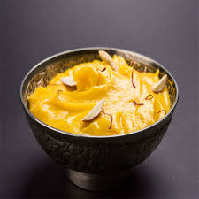

🍨 Shrikhand Recipe

Ingredients
- 2 cups hung curd (yogurt strained overnight)
- 1/2 cup powdered sugar (adjust to taste)
- 1/4 tsp cardamom powder
- A few strands of saffron soaked in 1 tbsp warm milk
- 2 tbsp chopped pistachios and almonds
- Optional: rose water or kewra essence (a few drops)
Instructions
- Strain yogurt overnight in a muslin cloth to get thick hung curd.
- In a bowl, whisk the hung curd until smooth and creamy.
- Add powdered sugar and mix well.
- Add cardamom powder and saffron milk. Mix until fully blended.
- Chill in the fridge for 1–2 hours for best flavor.
- Garnish with chopped nuts and serve chilled.
Serve With
- Puri
- As a dessert after a traditional Gujarati meal
💡 Tip: You can flavor shrikhand with mango pulp to make Amrakhand!